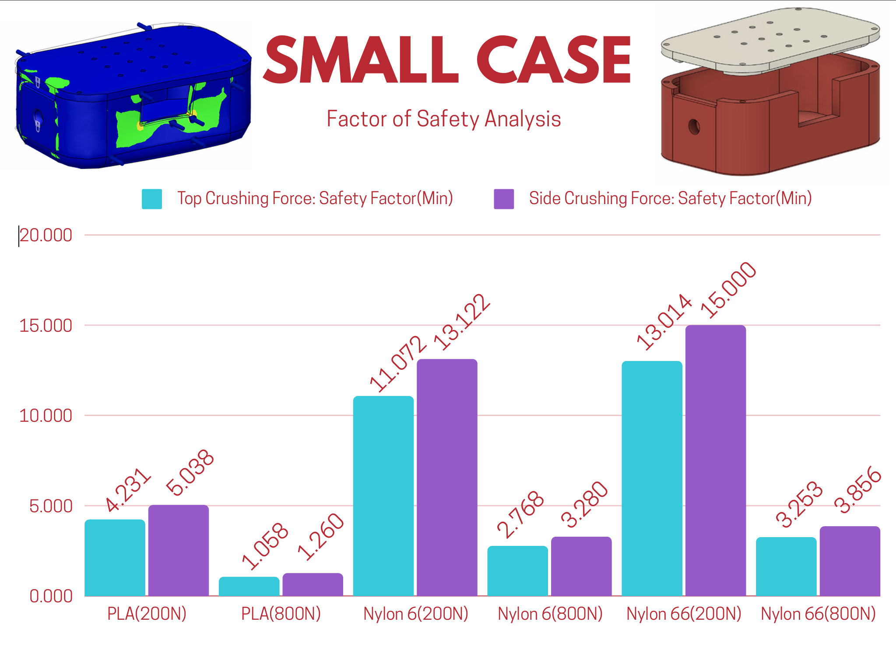
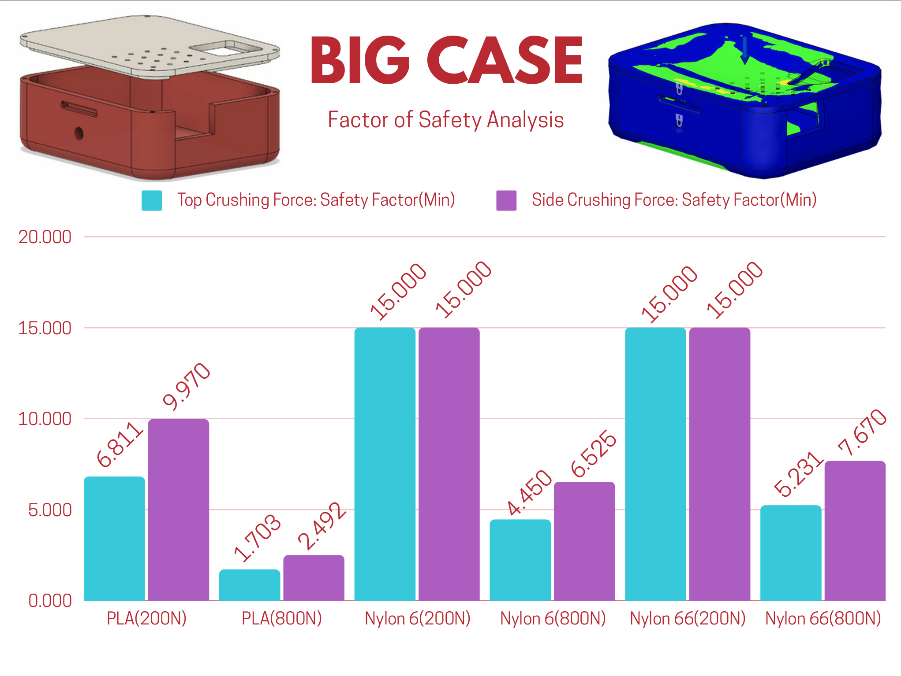
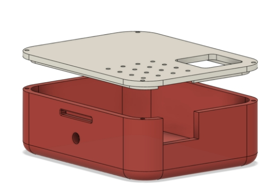
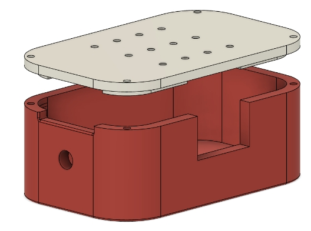
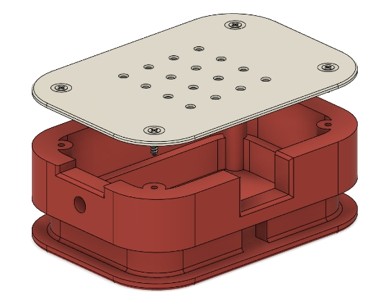
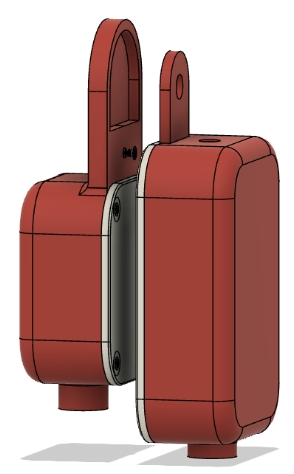
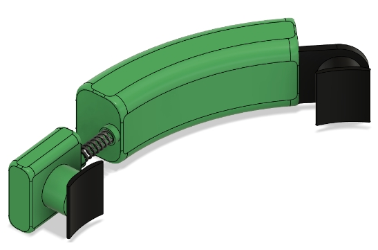
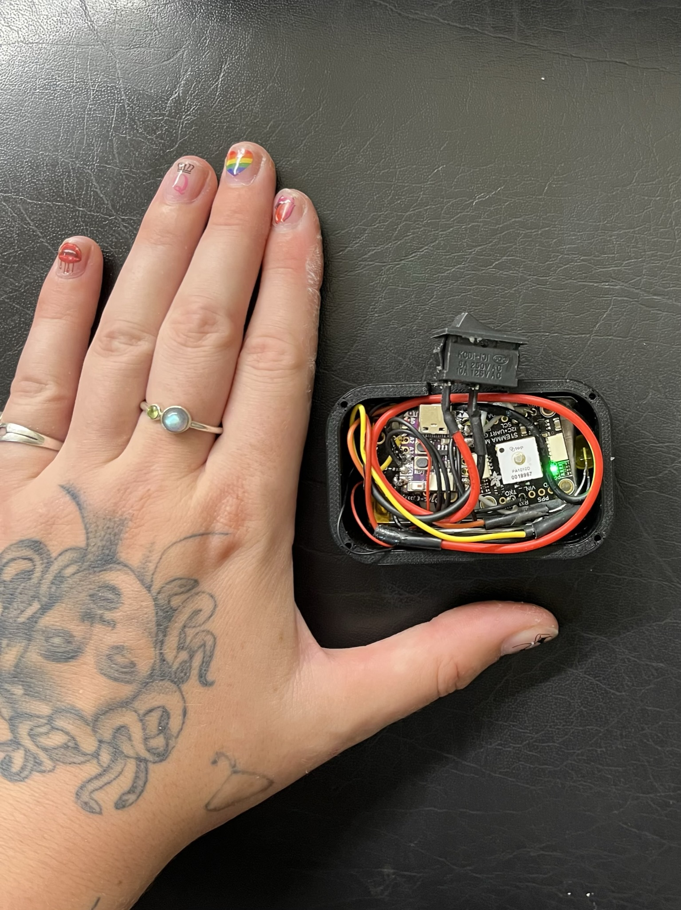
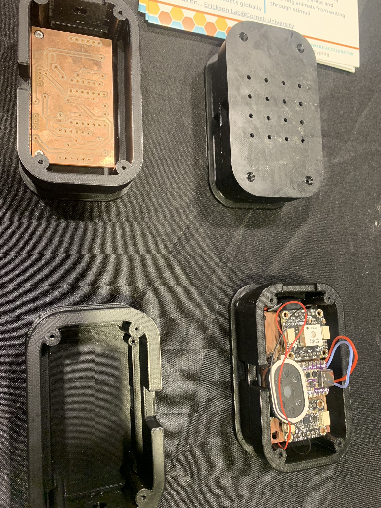
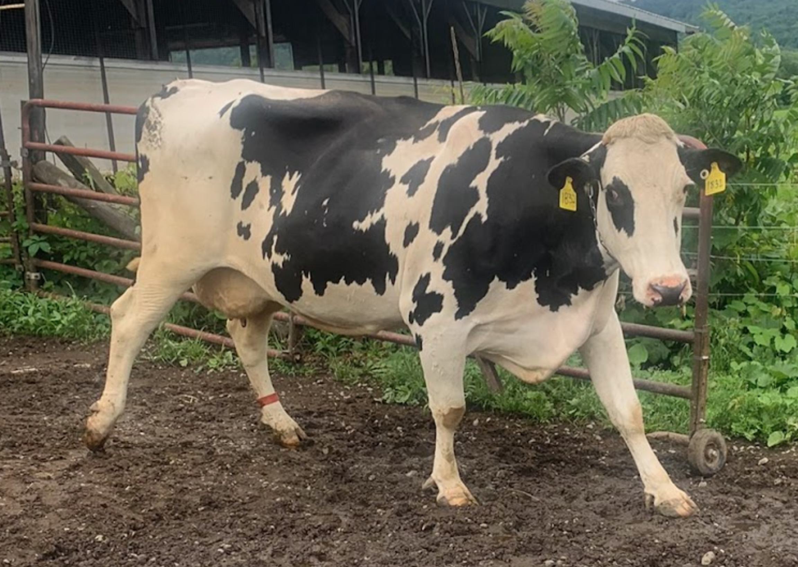

Overview
Virtual fencing is a livestock management approach that uses GPS tracking and stimuli (sound + electric shock) to keep animals within a farmer-defined virtual boundary. Instead of physically moving fences, farmers can set GPS coordinates and track animals in real time, with collars (or tags) by triggering a stimuli as animals approach the boundary.
Problem + Motivation
Traditional fencing requires significant time and labor to manage, and for large-scale farms the maintenance costs can be substantial. Although virtual fencing systems exist, they are often prohibitively expensive and depend on bulky, heavy collars that introduce snagging and usability concerns.
Project Goal
Our team was tasked with designing an affordable, low-cost cow ear tag alternative that reduces size compared to traditional collars and makes virtual fencing more accessible, particularly in low- and middle-income countries. The goal was to monitor cow movement and behavior using sensor data (GPS and accelerometer) and apply electric and visual/sound-based stimuli to deter boundary crossing.
Customer Discovery (what we learned from farmers / stakeholders)
Key concerns raised during customer discovery included cost, communication and reliability (such as Wi-Fi connectivity issues), and overall trust in the system. Farmers also emphasized the need for fencing flexibility across seasons, with larger grazing areas in the summer and smaller ones in the winter. While traditional and electric fencing are widely used, they present ongoing challenges related to maintaining electrical charge, long-term durability, and physical upkeep, including wires being damaged by branches or terrain.
When asked what would motivate them to invest in a new system, farmers consistently cited being driven by necessity and the importance of a solution that is both cost-effective and highly reliable.
My Contribution (Jamison — CAD + Iteration)
I designed and iterated on electronic enclosures in Fusion 360, with a focus on safety, animal comfort, and cost-effective deployment for farmers in low- and middle-income regions. To validate and refine the design, I conducted 24 finite element analysis (FEA) simulations in ANSYS and Fusion 360, evaluating factor of safety, material strength, and material efficiency by modeling realistic loading conditions ranging from a cow chewing on the enclosure at 200 N to full biting forces of 800 N. In parallel, I performed on-farm testing using different enclosure materials—Nylon 66, Nylon 6, and PLA—to identify an ideal prototyping material that balanced durability, manufacturability, and performance.


Design Iterations
- Iteration 1a-1b: Improved fit for components and manufacturability, but still had tradeoffs (bulk + cable management).


- Iteration 2 (best current direction): Designed for lights + most components, manufacturable, slightly larger, with no major listed drawbacks.

- Future Iteration 1: Designed to give a larger aurface area incontact with the ear of the cow.

- Future Iteration 2: Designed to allow more space for electronics and to redistribute weight on ear.

Electrical Stimuli Prototyping (team workstream summary)
To support the deterrence function, we prototyped and simulated high-voltage electric stimuli circuits (transformer-based and boost-converter-based approaches) and validated behavior in lab testing. For example, a boost converter test achieved ~197.4 Vdc output at ~2.34 mA under the stated drive conditions.
Extra Photos



Research and entrepreneurship outcome
This project was developed through REV Ithaca Startup Works, combining stakeholder interviews, iterative enclosure design and field testing. I also contributed enclosure design and mechanical testing work to the associated Frontiers in Animal Science publication (2025, article 1643958).